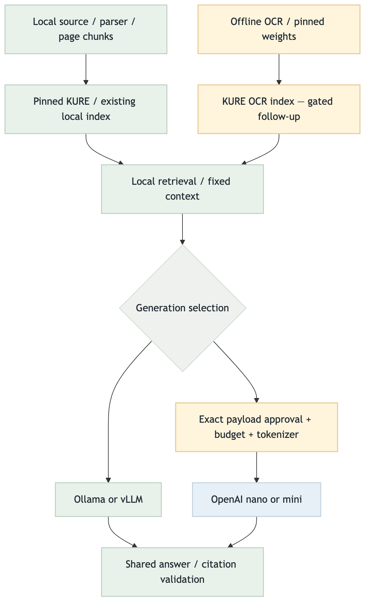
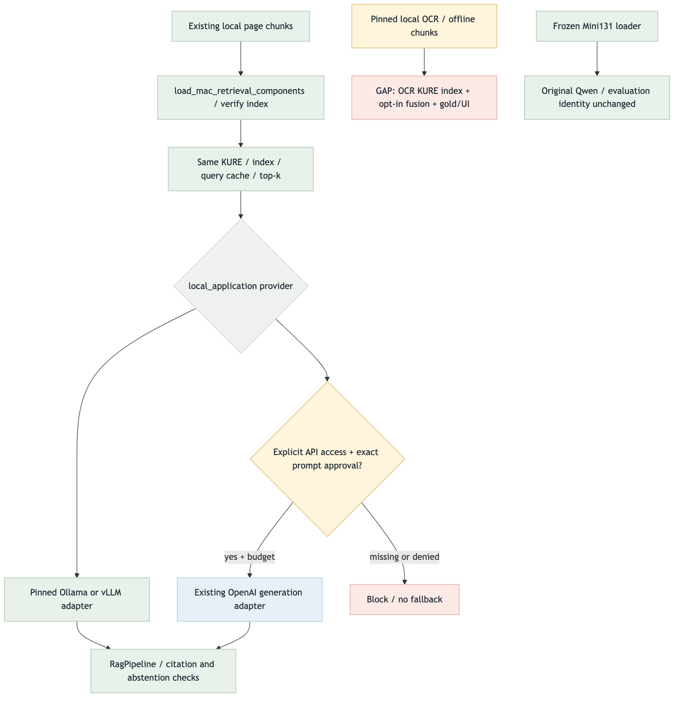

MidProjectRAG · 2026-09-03 · local-first integration
검색은 로컬, 생성 LLM만 교체
API 브랜치 전체 병합 없음. OCR runtime은 통합하지만 OCR 검색/VLM 완성은 별도다. 현재 UI·실제 서비스는 전환하지 않는다.
실제 사용 스펙
| 구간 | 구성 | 이번 변경 |
|---|---|---|
| 문서 / 검색 | 기존 page chunks · KURE 1,024차원 · local exact index | 기존 hash·scope·query cache 유지 |
| OCR | PaddleOCR 3.3.2 · PP-OCRv5 detector / 한국어 recognizer | 9 weight 파일 검사 · CPU runtime · offline chunks |
| 생성 | Ollama / vLLM / OpenAI nano·mini | 공통 Generator · 1,024 output / 8,192 logical context |
| API 경계 | 명시 client·counter·budget·실제 prompt 승인 | 키만으로 활성화하지 않음 · 자동 fallback 없음 |
실행 결과와 제한
| 검증 | 증거 |
|---|---|
| 현재 코드 | 동일 retrieval / citation / cache, provider denial, frozen loader 회귀는 모의 provider로 검증. 최종 집계는 연결된 검증 원장 참조. |
| 실물 실행 | 이번 턴 유료 API·전체 OCR·재임베딩·서버 전환 없음. 실제 모델 성능 검증 아님. |
| 비공개 데이터 | resources·키·모델·venv 복사 없음. 없는 비공개 자료 테스트만 skip; 합성 계약 검증 유지. |
Target / Current Flow
초록: 검증한 정상 경로 · 파랑: 외부 모델 경로 · 노랑: 로컬/민감 경계 · 빨강: 차단/후속 GAP · 회색: 분기
Target — 목표 구조

Mermaid source · PNGCurrent — 현재 코드 연결

Mermaid source · PNGTarget vs Current Gap
| 구간 | 현재 | 후속 |
|---|---|---|
| 로컬 검색 + 생성기 교체 | 조립 함수 / 프로필 구현 | 실제 모델 응답·비용 측정은 별도 |
| OCR 검색 | offline OCR / chunks만 통합 | 로컬 KURE OCR index · relevance/dedup · opt-in · gold |
| UI / VLM | 변경 없음 | CLI/UI 선택기·인용 preview; VLM은 실패 유형 확인 뒤 |
우선순위 / Relay
후속 우선순위 점수는 upstream(0–3)+connection(0–3)+safety(0–2)+validation(0–2)+risk(-3–0). 자동 후속 실행은 하지 않는다.
| 항목 | 상태 | 점수 / 근거 |
|---|---|---|
| local 통합 / LLM 교체 | 구현 | 완료 항목 · 후속 점수 제외 |
| OCR qrels·admission·caption 배제 | 후속 | 3+3+2+2-1 = 9 · 활성화 전 안전/품질 gate |
| 로컬 OCR index·opt-in UI·골든 E2E | 후속 | 2+3+2+2-2 = 7 · 위 gate 의존 |
| image embedding / VLM | 보류 | 0+1+1+1-3 = 0 · 실측 실패 필요 |